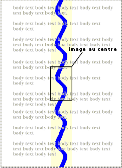

Contenu
Les propriétés CSS permettent aux auteurs la spécification d'une couleur d'avant-plan et d'arrière-plan pour un élément. Pour l'arrière-plan, cela peut être une couleur ou une image. Les propriétés d'arrière-plan autorisent le positionnement et la répétition d'une image de fond, si celle-ci doit rester fixe, par rapport à la zone de visualisation, ou bien, si elle doit défiler en même temps que le document.
Voir le passage sur les unités de couleur pour une syntaxe correcte des valeurs de couleur.
Cette propriété décrit la couleur d'avant-plan du contenu de texte d'un élément. Voici plusieurs façons d'indiquer la couleur rouge :
EM { color: red } /* nom de couleur prédéfini */
EM { color: rgb(255,0,0) } /* couleurs en RGB allant de 0 à 255 */
Les auteurs peuvent spécifier l'arrière-plan d'un élément (c.à.d. la surface où celui est rendu)
comme étant une couleur ou bien une image. Selon le modèle de la boîte,
l'arrière-plan correspond aux aires de contenu et,
d'espacement et de bordure.
Les couleurs et styles de bordure sont spécifiées par les propriétés de bordure.
Les marges étant transparentes, l'arrière-plan du parent est toujours visible au travers de celles-ci.
Bien que les propriétés d'arrière-plan ne s'héritent pas, l'arrière-plan de la boîte du parent transparaîtra par défaut, du fait de la valeur initiale 'transparent' de la propriété 'background-color'.
L'arrière-plan de la boîte générée par l'élément racine recouvre la totalité du canevas.
Dans le cas de documents HTML, on recommande aux auteurs de spécifier un arrière-plan à l'élément BODY, plutôt qu'à l'élément HTML. Les agents utilisateurs devraient suivre les règles de préséance suivantes pour remplir le fond du canevas : quand la valeur de la propriété 'background' pour l'élément HTML diffère de 'transparent', alors utiliser la valeur spécifiée, autrement utiliser celle spécifiée par la propriété 'background' de l'élément BODY. Le rendu n'est pas défini si la valeur finale reste 'transparent'.
Selon ces règles, le canevas en dessous du document HTML suivant aura un arrière-plan "marbré" :
<!DOCTYPE HTML PUBLIC "-//W3C//DTD HTML 4.0//EN">
<HTML>
<HEAD>
<TITLE>Donner un arrière-plan au canevas</TITLE>
<STYLE type="text/css">
BODY { background: url("http://style.com/marbre.png") }
</STYLE>
</HEAD>
<BODY>
<P>Mon arrière-plan est marbré.
</BODY>
</HTML>
| Valeur : | <couleur> | transparent | inherit |
| Initiale: | transparent |
| S'applique à : | tous les éléments |
| Héritée : | non |
| Pourcentage : | sans objet |
| Médias : | visuel |
Cette propriété donne la couleur d'arrière-plan d'un élément, avec une valeur de <couleur>, ou bien avec le mot-clé 'transparent', celui-ci laissant éventuellement voir les couleurs situées plus en-dessous.
H1 { background-color: #F00 }
| Valeur : | <uri> | none | inherit |
| Initiale : | none |
| S'applique à : | tous les éléments |
| Héritée : | non |
| Pourcentage : | sans objet |
| Médias : | visuel |
Cette propriété spécifie l'image d'arrière-plan d'un élément. En même temps qu'une image, les auteurs devraient aussi spécifier une couleur d'arrière-plan, cette couleur étant employée en remplacement d'une image indisponible. Celle-ci, une fois disponible, vient se superposer sur le fond coloré. La couleur du fond étant ainsi visible au travers des zones transparentes de l'image.
La propriété admet les valeurs d'<uri>, pointant vers une image, ou 'none', prohibant l'emploi d'image.
BODY { background-image: url("marble.gif") }
P { background-image: none }
| Valeur : | repeat | repeat-x | repeat-y | no-repeat | inherit |
| Initiale : | repeat |
| S'applique à : | tous les éléments |
| Héritée : | non |
| Pourcentage : | sans objet |
| Médias : | visuel |
Quand on spécifie une image d'arrière-plan, cette propriété indique si
l'image est répétée (apposée) et la manière de la répétition.
La mosaïque de fond résultante correspond aux aires de contenu et,
d'espacement et de bordure de la boîte de l'élément
en question. Les significations des valeurs sont :
BODY {
background: white url("pendant.gif");
background-repeat: repeat-y;
background-position: center;
}
 [D]
Un exemplaire de l'image d'arrière-plan est placé au centre, puis d'autres exemplaires de celles-ci se placent les unes au-dessus, les autres en-dessous, produisant une bande verticale derrière l'élément.
| Valeur : | scroll | fixed | inherit |
| Initiale : | scroll |
| S'applique à : | tous les éléments |
| Héritée : | non |
| Pourcentage : | sans objet |
| Médias : | visuel |
Quand on spécifie une image d'arrière-plan, cette propriété indique si l'image est fixe par rapport à la zone de visualisation (pour la valeur 'fixed'), ou si celle-ci défile en même temps que le document (pour la valeur 'scroll'). Noter qu'il n'existe qu'une seule zone de visualisation par document ; c.à.d., même si l'élément est doté d'un mécanisme de défilement (voir la propriété 'overflow'), un arrière-plan avec la valeur 'fixed' ne se déplace pas avec cet élément.
Même si l'image est fixe, celle-ci n'est visible que quand elle se trouve dans les aires d'arrière-plan ou,
d'espacement ou de bordure de l'élément. À moins que l'image ne se répète en mosaïque
('background-repeat: repeat'), celle-ci peut ainsi ne pas apparaître.
Dans cet exemple, une bande verticale infinie reste "collée" dans la zone de visualisation quand l'élément défile :
BODY {
background: red url("pendant.gif");
background-repeat: repeat-y;
background-attachment: fixed;
}
Les agents utilisateurs peuvent considérer une valeur 'fixed' comme étant 'scroll'. Cependant, on recommande une interprétation correcte de la valeur 'fixed', au moins pour les éléments HTML et BODY, autrement il serait impossible pour un auteur de fournir une image destinée seulement aux navigateurs reconnaissant la valeur 'fixed'. Voir le passage sur la conformité pour des explications.
| Valeur : | [ [<pourcentage > | <longueur> ]{1,2} | [ [top | center | bottom] || [left | center | right] ] ] | inherit |
| Initiale : | 0% 0% |
| S'applique à : | ceux des éléments de type bloc et ceux remplacés |
| Héritée : | non |
| Pourcentage : | se rapporte à la taille de la boîte elle-même |
| Médias : | visuel |
Quand on spécifie une image d'arrière-plan, cette propriété indique la position initiale de celle-ci. Les significations des valeurs sont :
Quand on ne donne qu'une seule valeur, en pourcentage ou en longueur, celle-ci ne concerne que la position horizontale, la position verticale sera 50%. Quand on donne deux valeurs, la première concerne la position horizontale. Les combinaisons de valeurs de pourcentage et de longueur sont admises (ex. '50% 2cm'). Les positions négatives le sont également. On ne peut pas combiner des mots-clés avec des valeurs de pourcentage ou de longueur (ce qui est possible est indiqué plus haut).
BODY { background: url("banner.jpeg") right top } /* 100% 0% */
BODY { background: url("banner.jpeg") top center } /* 50% 0% */
BODY { background: url("banner.jpeg") center } /* 50% 50% */
BODY { background: url("banner.jpeg") bottom } /* 50% 100% */
Quand l'image d'arrière-plan est fixe par rapport à la zone de visualisation (voir la propriété ), cette image se place relativement à celui-ci, et non par rapport à l'aire d'espacement de l'élément. Par exemple :
BODY {
background-image: url("logo.png");
background-attachment: fixed;
background-position: 100% 100%;
background-repeat: no-repeat;
}
Ici, l'image (solitaire) est placée dans le coin en bas à droite de la zone de visualisation.
| Valeur : | [<'background-color'> || <'background-image'> || <'background-repeat'> || || <'background-position'>] | inherit |
| Initiale : | non définie pour les propriétés raccourcies |
| S'applique à : | tous les éléments |
| Héritée : | non |
| Pourcentage : | admis pour la propriété 'background-position' |
| Médias : | visuel |
La propriété 'background' est une propriété raccourcie qui sert à regrouper les propriétés individuelles 'background-color', 'background-image', 'background-repeat', et 'background-position' dans la feuille de style.
La propriété 'background' distribue d'abord à toutes les propriétés individuelles d'arrière-plan à leur valeur initiale, puis leur applique les valeurs explicites de la déclaration.
Dans la première règle de l'exemple suivant, la valeur de la propriété 'background-color' est seule spécifiée, les autres propriétés individuelles recevant leur valeur initiale. Dans la seconde règle, toutes les valeurs des propriétés individuelles sont spécifiées :
BODY { background: red }
P { background: url("chess.png") gray 50% repeat fixed }
Pour des explications concernant les questions soulevées par le gamma, consulter le tutoriel contenu dans la spécification PNG ([PNG10]).
Lors du calcul pour la correction du gamma, les agents utilisateurs, ceux affichant sur un écran cathodique, peuvent considérer un écran cathodique idéal et ignorer les effets du gamma apparent dus au dithering. Ceci implique, de leur part et selon les plates-formes actuelles, les corrections minimales suivantes :
L'expression "appliquer un gamma" signifie que chacune des valeurs R, G et B doit être convertie en R'=Rgamma, G'=Ggamma et B'=Bgamma, avant leur transmission au système d'exploitation.
Ceci peut se faire très rapidement en construisant une table de référence de 256 valeurs, une seule fois au lancement du navigateur, ainsi :
for i := 0 to 255 do raw := i / 255.0; corr := pow (raw, gamma); table[i] := trunc (0.5 + corr * 255.0) end
ce qui évite des calculs compliqués pour chaque attribut de couleur et autrement faramineux au niveau de chaque pixel.